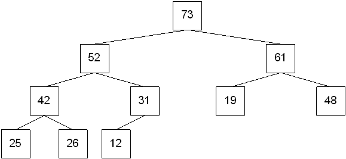
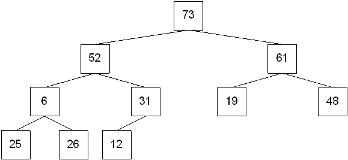
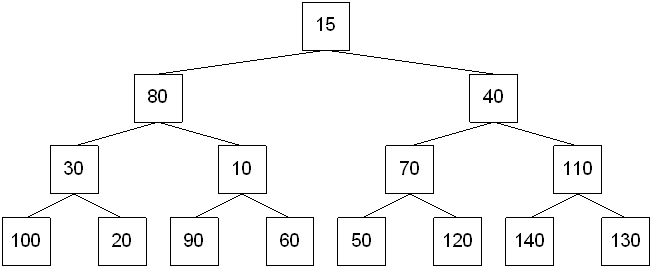
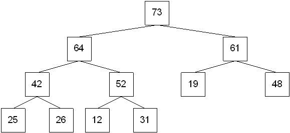

A heap or max heap is a binary tree that satisifies the following properties:
it is complete
the data item stored in each node is greater than or equal to the data items stored in its children (this is known as the heap-order property)
A min heap is a binary tree that satisifies the following properties:
it is complete
the data item stored in each node is less than the data items stored in its children
Heaps are typically stored in arrays or vectors when they are implemented in a program. However, it's easier to "see" the heap properties when it's drawn as a tree.)


Assuming that values are stored starting at subscript 1, then
Starting with the last node that is not a leaf node, compare it with its left and right children. Interchange the node with the larger of its two children. Continue this process with the node until it becomes a leaf node or until the heap property is restored. This is known as the percolate down process.
Move to the preceding node that is not a leaf and repeat the percolate down process. Continue this process until the root is reached.

There are two basic operations that can be performed on a heap:
Inserting an item into a heap
Finding and removing the maximum item from the heap
Conceptually, both operations are fairly simple. But as with AVL trees, either of the operations can cause the heap properties to be violated. The nice thing about a heap? It's much easier to fix the violations!
Step 1: Insert the node in the first available level order position.
Step 2: Compare the newly inserted node with its parent. If the newly inserted node is larger, swap it with its parent.
Step 3: Continue step 2 until the heap order property is restored.
Steps 2 and 3 are known as the percolate up process.

Step 1: Find the maximum node.
Step 2: Replace the maximum node with the last leaf node in level order.
Step 3: Compare the replacement against its children. If one of the children is larger, swap the replacement with the largest child.
Step 4: Repeat step 3 until the heap order property is restored.
Does this process seem familiar?
perc_down(r, n)
r = subscript of the root of subtree where the process will begin
c = subscript of the left child
n = number of elements in the entire array
c = 2 * r // add + 1 if the heap is stored using 0 based subscripts
while (c < n)
if (c < n-1 AND array[c] < array[c+1])
increment c by 1
endif
if array[r] < array[c]
swap array[r] and array[c]
r = c
c = 2 * c
else
break out of loop
endif
increment c by 1
endwhile
perc_up(h, size)
h = subscript of where the item will be inserted
size = size of the heap BEFORE inserting
increase size by 1
set h = size
while ( h > 1 AND insertionItem > array[h/2] )
array[h] = array[h/2]
h = h / 2
endwhile
array[h] = insertItem
r = subscript of the root of subtree where the process will begin n = number of elements in the entire array r = (n / 2) // add - 1 if the heap is stored using 0 based subscripts while (r >= 0) perc_down(r, n) decrement r by 1 endwhile
The heap sort first heapifies the list of numbers. The element at the beginning of the list is then swapped with the element at the end of the list. The list is made 1 element shorter. The new list is heapified. The element at the beginning is swapped with the element at the end. The list is made 1 element shorter. The process continues until the entire list is sorted.
heapify the array i = n - 1 while (i > 0) swap array[0] and array[i] perc_down(0, i) decrement i by 1 endwhile